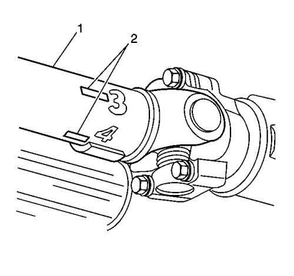
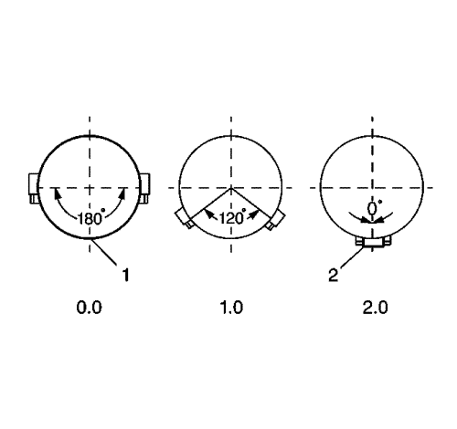

Ajuste de equilibrado del sistema de componentes de propulsión
Herramientas especiales
| • | EL-38792-20 Extensión de cable eléctrico de luz de temporización de 20 pies |
| • | EL-38792-25 Luz de distribución del sensor inductor o equivalente |
| • | Analizador electrónico de vibración GE-38792-A (EVA) 2 |
| • | GE-38792-27 Extensión de cable eléctrico de EVA de 6 pies |
Si desea informarse sobre herramientas regionales equivalentes, consultar Herramientas y equipo especial .
Este procedimiento se ha diseñado para afinar el equilibrado de un árbol de transmisión mientras se monta en el vehículo. Los pequeños grados de desequilibrado residual que pudieran estar presentes en otros componentes del sistema de propulsión podrían compensarse llevando a cabo este procedimiento. El resultado final de afinar adecuadamente el equilibrado del árbol de transmisión puede ser, o bien una importante reducción, o bien una eliminación de la perturbación por vibración relacionada con la rotación de primer orden de un árbol de transmisión.
Afinado del equilibrado de un árbol de transmisión puede ayudar a lograr un sistema de componentes de propulsión completo más equilibrado.
Nota: El alabeo del árbol de transmisión que hay que equilibrar y el alabeo de los componentes apareados con dicho árbol de transmisión deben encontrarse dentro de los límites de tolerancia antes de efectuar un intento de llevar a cabo dicho procedimiento.
Si hay disponible un analizador de vibraciones electrónico (EVA) 2 GE-38792-A, siga el procedimiento siguiente: Procedimiento de ajuste usando EVA. Si no se dispone de dicho analizador EVA 2, siga el segundo procedimiento: Procedimiento de ajuste sin EVA.
Procedimiento de ajuste usando EVA
Atención: No apriete el pedal del freno con los rotores o los tambores del freno quitados o con las pinzas de freno recolocadas lejos de los rotores del freno o se podrá deteriorar el sistema de frenos.
- Levante y fije el vehículo; asegúrese de que el árbol o árboles de transmisión están sujetos a la altura de circulación y que la carrocería del vehículo está sujeta por los componentes de la suspensión.
- Con los conjuntos de neumáticos y ruedas, y con los rotores de los frenos y/o tambores de freno retirados del árbol o árboles de transmisión, arranque el motor y desconecte todos los accesorios del motor.
- Meta la marcha hacia delante en el cambio.
- Haga funcionar el vehículo a la velocidad a la que se produce la vibración máxima en el árbol de transmisión; observe qué extremo del árbol de transmisión muestra el mayor grado de perturbación por vibraciones.
- Apague el motor para ralentizar y detener la rotación del árbol de transmisión.

- Marque la circunferencia del árbol de transmisión (1) que hay que equilibrar en cuatro puntos separados 90 grados (2), lo más próximos al extremo que ha presentado el mayor grado de vibración. Número de las marcas 1-4.
- Instale en el vehículo el EVA 2 GE-38792-A, la extensión de cable eléctrico de EVA de 6 pies GE-38792-27, la luz de distribución del sensor inductor EL-38792-25 o equivalente, y la extensión de 20 pies EL-38792-20.
- Conecte el clip en la luz de distribución del sensor inductor EL-38792-25 o equivalente en el cable disparador del EVA 2 GE-38792-A.
- Monte el sensor de vibraciones del EVA 2 GE-38792-A en la parte inferior de los componentes de propulsión más próxima al extremo del árbol de transmisión que ha presentado el mayor grado de vibración.
Asegúrese de que el lado del sensor marcado como ARRIBA mira hacia arriba y que el sensor está colocado lo más horizontal posible.
- Enchufe el cable del sensor de vibraciones en la entrada A del EVA 2 GE-38792-A. La entrada B no se usa con la función estroboscópica.
- Haga funcionar el vehículo a la velocidad a la que se produce la vibración máxima en el árbol de transmisión; observe las lecturas de frecuencia mostradas en el EVA 2 GE-38792-A.
Nota: NO siga afinando el equilibrado de un árbol de transmisión si la frecuencia dominante mostrada no está relacionada con las revoluciones de primer orden del árbol de transmisión.
- Compruebe que la frecuencia dominante mostrada en el EVA 2 ge-38792-A coincide con la frecuencia registrada ante el problema de las vibraciones.
- Registre la amplitud de lecturas de las frecuencias dominantes mostradas.
- Usando la función estroboscópica del EVA 2 GE-38792-A, seleccione el rango de filtrado correcto a emplear para el ajuste del equilibrio, de forma que la frecuencia dominante estuviera próxima a la media del rango de filtrado. Utilice el filtro de rango completo únicamente como último recurso si uno de los filtros de rango específicos no cubren la frecuencia de forma adecuada.
- El indicador del EVA 2 GE-38792-A mostrará la frecuencia dominante, la amplitud y el rango de filtrado seleccionado.
- Apunte la luz de distribución del sensor inductor EL-38792-25 o equivalente en las marcas situadas en el árbol de transmisión. Una vez activado, el efecto estroboscópico se dará para congelar las marcas situadas en el árbol de transmisión en rotación. Registre cuál de las marcas numeradas parece encontrarse en la parte inferior del árbol de transmisión, o en la posición de las 6:00 del reloj. Esta posición identifica el punto de luz del árbol de transmisión.
- Apague el motor para ralentizar y detener la rotación del árbol de transmisión.
- Monte una abrazadera para mangueras de tipo banda como un peso, con la cabeza de la abrazadera directamente sobre el punto de luz.
- Haga funcionar el vehículo a la velocidad a la que se produce la vibración máxima en el árbol de transmisión.
- Usando la luz de distribución del sensor inductor EL-38792-25 o equivalente, observe la ubicación de las marcas situadas en el árbol de transmisión.
- Si las marcas en el árbol de transmisión parecen moverse ahora erráticamente, compare la amplitud de la corriente de la frecuencia de vibración con la amplitud original registrada anteriormente.
Si la amplitud ha disminuido con respecto a la amplitud registrada, el equilibrado logrado puede ser suficiente y el vehículo debería ser comprobado en carretera para determinar el efecto sobre el problema de la vibración.
- Si la cabeza de la abrazadera sobre el punto de luz original se encuentra ahora cerca de la parte superior del árbol de transmisión, dentro de los 180 grados -próxima o por debajo de la posición de las 12:00 horas de la posición original en la parte inferior del árbol de transmisión (posición a las 6:00 horas), hay que ajustar la posición del peso. Realice los siguientes pasos:
| 22.1. | Desplace la posición de la cabeza de la abrazadera hacia la posición de las 6:00 horas. |
| 22.2. | Usando la luz de distribución del sensor inductor EL-38792-25 o equivalente, vuelva a comprobar la posición de las marcas del árbol de distribución. |
| 22.3. | Si fuera neceario, siga desplazando la posición de la cabeza de la abrazadera hacia la posición de las 6:00 horas y vuelva a comprobar el progreso hasta que se logre una mejora en el equilibrado. |

- Si la cabeza de la abrazadera sobre el punto de luz original aún sigue situado en la parte inferior del árbol de transmisión (posición a las 6:00 horas), se requiere un peso adicional. Realice los siguientes pasos:
| 23.1. | Añada una segunda abrazadera al árbol de transmisión, contigua a la primera abrazadera, y con las cabezas de las abrazaderas alineadas. |
| 23.2. | Usando la luz de distribución del sensor inductor EL-38792-25 o equivalente, vuelva a comprobar la posición de las marcas del árbol de distribución. |
| 23.3. | Si las cabezas de abrazadera están por encima del punto ligero original, a 90-180 grados en o por encima de la posición de las 9 en punto o de la posición de las 3 en punto - desde la posición original en la parte inferior del árbol de transmisión - posición de las 6 en punto (1) - se requiere menos peso total. Proceda al paso 23.4. |
| 23.4. | Coloque las cabezas de abrazadera a una distancia igual de cada lado del punto ligero separadas entre sí de 1 a 120 grados para reducir la cantidad total de peso en relación con el punto ligero. |
| 23.5. | Usando la luz de distribución del sensor inductor EL-38792-25 o equivalente, vuelva a comprobar la posición de las marcas del árbol de distribución. |
| 23.6. | Si es necesario, continúe moviendo la posición de las cabezas de abrazadera a una distancia igual de cada lado del punto ligero hasta un máximo de 120 grados de separación entre sí, hasta que se consiga la mayor mejora en el equilibrio. |
| 23.7. | Si el equilibrio del árbol de transmisión mejora, pero todavía no es satisfactorio, es posible que aún se requiera más peso. Realice los siguientes pasos: |
| 23.7.1. | Añada una tercera abrazadera al árbol de transmisión, junto a las abrazaderas primera y segunda, con la cabeza de la abrazadera directamente (2) sobre el punto ligero. |
| 23.7.2. | Mueva la posición de las cabezas de la primera y la segunda abrazadera a una distancia igual a ambos lados del punto ligero separadas entre sí de 1 a 120 para llegar a una cantidad total de peso superior a dos pesos, pero inferior a tres pesos en relación con el punto ligero. |
| 23.7.3. | Usando la luz de distribución del sensor inductor EL-38792-25 o equivalente, vuelva a comprobar la posición de las marcas del árbol de distribución. |
| 23.7.4. | Si es necesario, continúe moviendo la posición de las cabezas de la primera y la segunda abrazadera a una distancia igual de cada lado del punto ligero hasta un máximo de 120 grados de separación entre sí, hasta que se consiga la mayor mejora en el equilibrio. |
| 23.8. | Si se ha utilizado una tercera abrazadera en el árbol de transmisión y aún así no se ha conseguido el equilibrio suficiente, hay que sustituir el árbol de trasmisión. |
- Si la cabeza de abrazadera está por encima del punto ligero original, 90-180 grados en o por encima de la posición de las 9 en punto o de la posición de las 3 en punto - desde la posición original en la parte inferior del árbol de transmisión - posición de las 6 en punto - se requiere menos peso total. Realice los siguientes pasos:
| 24.1. | Añada una segunda abrazadera al árbol de transmisión, contigua a la primera abrazadera, y con las cabezas de las abrazaderas alineadas. |
| 24.2. | Coloque las cabezas de abrazadera a una distancia igual de cada lado del punto ligero separadas entre sí de 120 a 180 grados para reducir la cantidad total de peso en relación con el punto ligero. |
| 24.3. | Usando la luz de distribución del sensor inductor EL-38792-25 o equivalente, vuelva a comprobar la posición de las marcas del árbol de distribución. |
| 24.4. | Si es necesario, continúe moviendo la posición de las cabezas de abrazadera a una distancia igual de cada lado del punto ligero hasta un máximo de 180 grados de separación entre sí, pero no menos de 120 grados de separación entre sí, hasta que se consiga la mayor mejora en el equilibrio. |
- Si las marcas en el árbol de transmisión parecen moverse ahora erráticamente, compare la amplitud de la corriente de la frecuencia de vibración con la amplitud original registrada anteriormente.
Si la amplitud ha disminuido con respecto a la amplitud registrada, el equilibrado logrado puede ser suficiente y el vehículo debería ser comprobado en carretera para determinar el efecto sobre el problema de la vibración.
Procedimiento de ajuste sin EVA
Atención: No apriete el pedal del freno con los rotores o los tambores del freno quitados o con las pinzas de freno recolocadas lejos de los rotores del freno o se podrá deteriorar el sistema de frenos.
- Levante y fije el vehículo; asegúrese de que el árbol o árboles de transmisión están sujetos a la altura de circulación y que la carrocería del vehículo está sujeta por los componentes de la suspensión.
- Con los conjuntos de neumáticos y ruedas, y con los rotores de los frenos y/o tambores de freno retirados del árbol o árboles de transmisión, arranque el motor y desconecte todos los accesorios del motor.
- Meta la marcha hacia delante en el cambio.
- Haga funcionar el vehículo a la velocidad a la que se produce la vibración máxima en el árbol de transmisión; observe qué extremo del árbol de transmisión muestra el mayor grado de perturbación por vibraciones.
- Coloque cuidadosamente un trozo de tiza junto al extremo del árbol de transmisión simplemente para hacer contacto a medida que el árbol gira.
- Apague el motor para ralentizar y detener la rotación del árbol de transmisión.
- Observe la situación de la marca de tiza en el árbol de transmisión
| • | Si la marca de tiza da la vuelta a todo el árbol de transmisión tras el primer intento, borre la marca del árbol y repita los pasos 2 a 7, coloque la tiza sin apretar tanto junto al árbol de transmisión. |
| • | Si la marca de tiza da la vuelta a todo el eje de transmisión tras el segundo intento, es posible que el alabeo del árbol de transmisión no sea la causa de la anomalía. Proceda al paso 16. |
| • | Si la marca de tiza sólo está en una pequeña parte del árbol de transmisión, la marca identifica el punto pesado del árbol de transmisión. El punto pesado del árbol de transmisión se moverá hacia abajo durante la rotación. Coloque una pequeña marca en el árbol a 180 grados, directamente frente al punto pesado, e identifique la marca como el punto ligero. Proceda al paso 8. |
- Monte una abrazadera de tubo flexible de tipo banda en el árbol de transmisión como peso, con la cabeza de la abrazadera directamente sobre el punto ligero, o a 180 grados directamente frente al punto pesado.
- Mida la cantidad de anomalía en el árbol de transmisión.
| • | Si la cantidad de anomalía en el árbol de transmisión parece haberse reducido significativamente, el equilibrio conseguido puede ser suficiente y se debería comprobar el vehículo en carretera para determinar su efecto sobre el problema de vibración. La cabeza de la abrazadera se puede mover de forma muy ligera si es necesario para afinar el equilibrio conseguido. |
| • | Si la cantidad de anomalía en el árbol de transmisión apenas parece haber cambiado o incluso ha aumentado, proceda al paso 10. |
- Añada una segunda abrazadera al árbol de transmisión, contigua a la primera abrazadera, y con las cabezas de las abrazaderas alineadas.
- Mida la cantidad de anomalía en el árbol de transmisión.
| • | Si la cantidad de anomalía en el árbol de transmisión parece haberse reducido significativamente, el equilibrio conseguido puede ser suficiente y se debería comprobar el vehículo en carretera para determinar su efecto sobre el problema de vibración. La cabeza de las abrazaderas se puede mover de forma muy ligera a una distancia separada en igual medida de cualquier lado del punto ligero o, si es necesario, se puede mover de formar ligera mientras todavía está alineada para afinar el equilibrio conseguido. |
| • | Si la cantidad de anomalía en el árbol de transmisión apenas parece haber cambiado o incluso ha aumentado, proceda al paso 12. |
- Coloque las cabezas de abrazadera a una distancia igual de cada lado del punto ligero separadas entre sí de 1 a 120 grados para reducir la cantidad total de peso en relación con el punto ligero.
- Mida la cantidad de anomalía en el árbol de transmisión.
| • | Si la cantidad de anomalía en el árbol de transmisión parece haberse reducido significativamente, el equilibrio conseguido puede ser suficiente y se debería comprobar el vehículo en carretera para determinar su efecto sobre el problema de vibración. Si es necesario, continúe moviendo la posición de las cabezas de abrazadera a una distancia igual de cada lado del punto ligero hasta un máximo de 120 grados de separación entre sí, hasta que se consiga la mayor cantidad de reducción de la anomalía de vibración. |
| • | Si la cantidad de anomalía en el árbol de transmisión apenas parece haber cambiado o incluso ha aumentado, proceda al paso 14. |
- Añada una tercera abrazadera al árbol de transmisión, junto a las abrazaderas primera y la segunda, con la cabeza de la abrazadera directamente sobre el punto ligero.
- Mida la cantidad de anomalía en el árbol de transmisión.
| • | Si la cantidad de anomalía en el árbol de transmisión parece haberse reducido significativamente, el equilibrio conseguido puede ser suficiente y se debería comprobar el vehículo en carretera para determinar su efecto sobre el problema de vibración. Si es necesario, continúe moviendo la posición de la cabeza de la primera y la segunda abrazadera a una distancia igual de cada lado del punto ligero hasta un máximo de 120 grados de separación entre sí, hasta que se consiga la mayor cantidad de reducción de la anomalía de vibración. |
| • | Si la cantidad de anomalía en el árbol de transmisión apenas parece haber cambiado o un incluso ha aumentado tras utilizar una tercera abrazadera en el árbol de transmisión, es posible que sea necesario sustituir el árbol de transmisión. |
- Si no se ha podido identificar el punto pesado del árbol de transmisión, monte una abrazadera para tubo flexible tipo banda en el árbol de transmisión como peso, con la cabeza de la abrazadera directamente en línea con el peso instalado de fábrica.
- Mida la cantidad de anomalía en el árbol de transmisión.
| • | Si la cantidad de anomalía en el árbol de transmisión parece haberse reducido significativamente, el equilibrio conseguido puede ser suficiente y se debería comprobar el vehículo en carretera para determinar su efecto sobre el problema de vibración. La cabeza de la abrazadera se puede mover de forma muy ligera si es necesario para afinar el equilibrio conseguido. |
| • | Si la cantidad de anomalía en el árbol de transmisión apenas parece haber cambiado o incluso ha aumentado, proceda al paso 18. |
- Mueva la cabeza del abrazadera 180 grados, directamente frente al peso instalado de fábrica.
- Mida la cantidad de anomalía en el árbol de transmisión.
| • | Si la cantidad de anomalía en el árbol de transmisión parece haberse reducido significativamente, el equilibrio conseguido puede ser suficiente y se debería comprobar el vehículo en carretera para determinar su efecto sobre el problema de vibración. La cabeza de la abrazadera se puede mover de forma muy ligera si es necesario para afinar el equilibrio conseguido. |
| • | Si la cantidad de anomalía en el árbol de transmisión apenas parece haber cambiado o incluso ha aumentado, es posible que sea necesario sustituir el árbol de transmisión. |
| © Copyright Chevrolet Europe. All rights reserved |